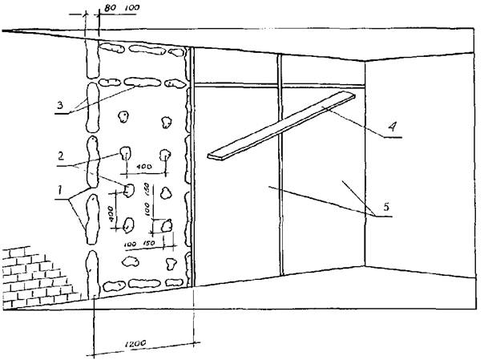

ДЕПАРТАМЕНТ СТРОИТЕЛЬСТВА
НАУЧНО-ТЕХНИЧЕСКОЕ УПРАВЛЕНИЕ
МОССТРОЙЛИЦЕНЗИЯ
ВЕДОМСТВЕННЫЕ СТРОИТЕЛЬНЫЕ НОРМЫ
ИНСТРУКЦИЯ
ПО ИНДУСТРИАЛЬНЫМ МЕТОДАМ
ОТДЕЛКИ ИНТЕРЬЕРОВ.
ОБЛИЦОВКА СТЕН
ВСН 36-95
Москва - 1996
Инструкция по индустриальным методам отделки интерьеров разработана НИИМосстроем Департамента строительства (д.т.н., проф. Е.Д. Белоусов, инж. А.Н. Шевченко, инж. А.Ю. Сатирский, к.т.н. Я.Г. Могилевский) с участием Мосстройлицензии (Ю.И. Столяров и к.т.н. В.Д. Фельдман).
Инструкция согласована с Техническим управлением АО ХК «Главмосстрой» и АП «Мосотделспецстрой».
При пользовании настоящей инструкцией следует учитывать утвержденные изменения, внесенные в стандарты и технические условия на материалы, применяемые при отделке интерьеров (облицовке стен) индустриальными методами.
|
Департамент Научно-техническое |
Ведомственные строительные нормы Инструкция |
ВСН 36-95 ДС Взамен ВСН 194-83 Главмосстрой |
1.1. В настоящей «Инструкции» рассматривается облицовка поверхностей стен и перегородок индустриальными методами в зданиях различного назначения: культурно-бытовые, административные, учебные и др. с целью сокращения трудоемких «мокрых» процессов и продолжительности производства отделочных работ, а также повышения их качества.
1.2. До начала работ необходимо закончить все строительно-монтажные и отделочные работы, связанные с мокрыми процессами (устройство цементно-песчаных стяжек, штукатурные работы и т.п.).
1.3. В помещениях, подготовленных под облицовку стен, должны быть завершены сантехнические и электромонтажные работы, окраска потолков и устроены подготовки под покрытия полов.
1.4. Влажность кирпичных и бетонных поверхностей, отделываемых панелями заводского изготовления, не должна превышать 8 %.
1.5. Во время производства работ температурно-влажностный режим должен соответствовать режиму эксплуатации. В зимнее время работы должны выполняться при постоянно действующих системах отопления и вентиляции.
1.6. Швы внутренних поверхностей наружных стен кирпичных зданий, кладка которых выполнена «впустошовку», перед облицовкой листовыми материалами должны быть заполнены раствором, а облицовываемые поверхности - очищены от загрязнения и обеспылены.
|
Внесены |
УТВЕРЖДЕНЫ Научно-техническим управлением «25» декабря 1995 г. |
Дата введения в действие 1 января 1996 г. |
2.1. Для облицовки стен индустриальными методами применяют широкую номенклатуру плитных и листовых материалов и изделий из них: гипсокартонные и асбестоцементные листы, панели отделочные на основе гипсокартонных и асбестоцементных листов, цементностружечных, древесноволокнистых и древесностружечных плит.
2.2. Поставку на строительные объекты изделий для облицовки стен следует осуществлять комплектно со всеми другими материалами (метизы, раскладки, гипс, клеящие составы и др.). Подбор, разметка, раскрой и маркировка листов и плит по требуемым размерам выполняются в построечных условиях или в заготовительных мастерских, максимально механизировав все процессы заготовки. Раскрой следует производить с минимальным отходом материалов. При раскрое необходимо учитывать, что при установке между низом панели (листа) и полом должен образовываться зазор 2 - 3 см, прикрываемый плинтусом.
2.3. Углы и кромки листов и плит должны быть чисто обработаны и не повреждены.
2.4. Перед облицовкой вертикальные поверхности проверяются по отвесу с установкой опорных марок (маяков). Выявленные дефекты поверхностей устраняются частичной подклейкой на мастике полос облицовочного материала. В соответствии с разметкой расположения листов на вертикальных линиях их сопряжений провешиваются стены. Положения листов фиксируются опорными маячными марками из обрезков облицовки, устанавливаемыми на мастике.
2.5. Облицовываемые поверхности должны быть размечены в соответствии с размерами применяемых листов покрытия, при этом желательно обеспечить симметричное расположение листов и доборов, а также раскрой листов, сопряженных с оконными, дверными проемами и нишами.
2.6. Разметка стен и перегородок производится под отделку целыми листами облицовки. Листы (панели) располагаются только вертикально.
Горизонтальные стыки листов, если это специально не предусмотрено проектом, не допускаются.
2.7. В местах выпусков скрытых проводок (электроснабжения, радио, телевидения и связи), а также в местах подвески бытового оборудования и крепления плинтусов в одной плоскости с опорными марками на облицовываемой поверхности делаются основания из листовых материалов, которые крепятся на мастике или клее.
2.8. На облицовочных листах (панелях) размечаются и высверливаются или прорезаются отверстия для пропуска электрических, телефонных и радиопроводок, отверстия для крепления и установки электровыключателей, штепсельных и телефонных розеток, решеток вентиляции и подачи кондиционированного воздуха и т.п.
2.9. Края листов в местах сопряжений с дверными коробками должны примыкать к ним заподлицо и закрываться наличником до окраски стен.
При необходимости производится прирезка и прифуговка кромок облицовочных листов (панелей) по требуемым размерам.
2.10. Деревянные бруски для устройства каркаса должны поставляться на объект антисептированными и антипирированными, влажностью не более 18 %.
2.11. Способы крепления облицовочных материалов к стенам индустриальными методами приведены в таблице 1.
(Знаком + обозначены рекомендуемые способы крепления)
Таблица 1
|
На клеящих составах |
По деревянному каркасу |
На стальных профилях |
|||
|
на мастиках |
на клеях по гипсокартонным полоскам |
на клеях по деревянным пластинам |
|||
|
Гипсокартонные листы |
+ |
+ |
+ |
+ |
|
|
Панели гипсокартонные, облицованные пленочным материалом |
+ |
+ |
+ |
||
|
Асбестоцементные листы |
+ |
||||
|
Панели асбестоцементные с печатным рисунком или облицованные пленочным материалом |
+ |
+ |
|||
|
Панели из древесностружечных и древесноволокнистых плит, облицованные пленочным материалом или шпоном |
+ |
+ |
+ |
||
|
Столярные плиты, облицованные шпоном |
+ |
+ |
|||
2.12. При отделке поверхностей листовыми плитными материалами и панелями с лицевой отделкой в интерьерах зданий должны быть соблюдены требования СНиП 3.04.01-87 табл. 14 и 15. «Изоляционные и отделочные покрытия».
3.1. Гипсокартонный лист (ГОСТ 6266-89) представляет собой конструктивный и отделочный материал, состоящий из гипсового сердечника, все стороны которого, кроме торцевых кромок, облицованы картоном.
3.2. Гипсокартонные листы изготавливаются прямоугольной формы размерами:
длина от 1500 до 4000 мм (стандарт 2500 мм);
ширина 1200;
толщина от 8 до 25 мм (стандарт 12,5 мм).
С 1995 г. гипсокартонные листы изготавливаются АО СП «ТИГИ-KNAUF» по ТУ 5742-005-04001508-95 следующих номинальных геометрических размеров:
- по длине от 2000 до 4000 мм с шагом 250 мм;
- по ширине 1200 мм;
- по толщине 9,5; 12,5; 15 мм.
ГКЛ толщиной более 18 мм имеет ширину 600 и 1200 мм, длину от 2000 до 3500 мм с шагом 250 мм.
Отклонения от номинальных размеров ГКЛ, величины и количество допускаемых дефектов на лицевой поверхности не должны превышать норм, указанных в ГОСТ 6266-89 и ТУ 5742-005-04001508-95.
Влажность листов не допускается более 1 % по массе. Существует несколько способов крепления гипсокартонных листов, технология которых приводится ниже.
3.3.1. Технологическая последовательность облицовки стен:
- подготовка поверхности стены;
- разбивка поверхности стены на захватки с разметкой мест установки листов;
- раскрой и подготовка гипсокартонных листов;
- приготовление гипсовой мастики;
- нанесение на поверхность стены лепков из гипсовой мастики;
- нанесение полосы (ленты) из гипсовой мастики в местах стыка двух смежных гипсокартонных листов;
- установка гипсокартонного листа к стене;
- подмазка и заделка швов в местах сопряжения гипсокартонных листов и мест примыканий к плитам перекрытий.
Рекомендуются следующие гипсовые мастики для прикрепления гипсокартонных листов к стенам (см. табл. 2).
Таблица 2
|
Составы мастик в частях по массе |
||||
|
гипсовая |
гипсоопилочная |
гипсоперлитовая |
сульфитно-гипсовая |
|
|
1. Гипс строительный |
100 |
100 |
100 |
45 … 50 |
|
Опилки древесные |
- |
12 |
- |
- |
|
2. Замедлитель твердения гипса, 10 %-ный водный раствор клея КМЦ |
8 |
8 |
8 |
|
|
3. Сульфитно-дрожжевая бражка |
- |
- |
- |
100 |
|
4. Перлитовый песок фракции до 2,5 мм |
- |
- |
4 |
- |
|
5. Вода для затворения |
70 |
65 |
65 |
- |
Приготовление мастик производится на строительном объекте непосредственно перед их применением, в растворителе любого типа.
3.3.6. На облицовываемую поверхность (в пределах границ данного листа) в шахматном порядке через 400 мм набрасывают мастику в виде отдельных лепков диаметром 100 - 150 мм и наносят полосы (ленты) из гипсовой мастики шириной 80 - 100 мм в местах стыка двух смежных гипсокартонных листов (рис. 1). После нанесения лепков гипсокартонный лист прикладывают к стене и, осаживая при помощи правила, прижимают до соприкосновения со всеми лепками.
3.3.7. Гипсокартонные листы приклеиваются к стенам тыльной стороной к нанесенной на основание мастике.
3.3.8. Установку (приклеивание) гипсокартонных листов начинают от угла помещения, листы прижимаются по всей плоскости к стене, при этом должна обеспечиваться вертикальность швов.
3.3.9. Разделка стыков в местах сопряжения гипсокартонных листов производится следующими способами:
Первый способ - Зашпатлевать стык. Для этого требуется:
- приготовить гипсополимерцементный состав;
- нанести предварительно грунтовочный слой;
- наложить строго на ось стыка бумажную или тканевую ленту, прижимая ее к свежеуложенному составу;
- ленту протянуть по всей ширине шпателем, вжимая ее в уложенный состав;
- накрыть ленту тонким слоем гипсополимерцементного состава;
- при разделке стыков не допускать пузырей и складок.
Второй способ - Стык между гипсокартонными листами обработать (закрыть) поливинилхлоридной раскладкой на клее «Перминид» ТУ 400-1-136-78 изв. 1, 2, 3.
Третий способ - Устройство открытого руста на мастике.
Дальнейшая отделка поверхностей гипсокартонных листов (окраска или оклейка обоями) производится по технологии изложенной в СНиП 3.04-01-87 «Изоляционные и отделочные покрытия» (п.п. 3.23 - 3.28 и 3.35 - 3.43).
3.4.1 Технологическая последовательность облицовки стен выполняется в соответствии с п.п. 3.3.1, 3.3.2, 3.3.3.
3.4.2. По отвесу с выверкой правилом на облицовываемую поверхность наносят опорные марки размером 100×100 мм на гипсовой мастике (рис. 2).
3.4.3. Для устройства марок могут быть также использованы отходы гипсокартонных листов, для приклеивания которых используются те же гипсовые мастики (см. п. 3.3.4.).

Рис. 1. Облицовка стен гипсокартонными листами на гипсовой мастике:
1 - продухи; 2 - лепки из мастики; 3 - полоса из мастики; 4 - правило, 5 - гипсокартонные листы
Рис. 2. Облицовка гипсокартонными листами на гипсовой мастике по опорным маркам:
1 - продухи; 2 - опорные марки; 3 - полоса из мастики; 4 - лепки из мастики; 5 - гипсокартонные листы
3.4.4. Опорные марки располагаются по поверхности стен вертикальными рядами с расстоянием между рядами 600 мм по 3 - 4 марки в ряду (в зависимости от высоты помещения). При этом верхняя марка должна быть у потолка, а нижняя у пола.
3.4.5. Гипсокартонные листы приклеиваются к стенам тыльной стороной к нанесенной на основание мастике.
3.4.6. Все дальнейшие технологические операции выполняются в соответствии с п.п. 3.3.5 - 3.3.9.
3.5.1. Технологическая последовательность облицовки стен выполняется в соответствии с п.п. 3.3.1., 3.3.2., 3.3.3.
3.5.2. По отвесу с выверкой правилом на облицовываемую поверхность на гипсовой мастике под каждый гипсокартонный лист устанавливаются два вертикальных и три горизонтальных элемента каркаса из полос гипсокартонных листов и один ряд вертикальных марок размером 100×200 мм с расстоянием между марками и полосами каркаса по высоте 600 мм (рис. 3).
3.5.3. Полосы из гипсокартонных листов должны быть шириной не менее 80 - 100 мм.
3.5.4. Правильность установленного каркаса определяют провешиванием по вертикали и горизонтали. Отклонение поверхности от горизонтали и вертикали не должно быть более 1 мм на 1 м. Ровность поверхности каркаса проверяют накладыванием 2-метровой контрольной рейки (правила). Просвет между правилом и поверхностью каркаса не допускается более 2 мм.
3.5.5. Установку гипсокартонных листов допускается производить после полного твердения мастики, на которой приклеены полосы каркаса, но не ранее чем через сутки после установки каркаса.
3.5.6. Крепление гипсокартонных листов производится на гипсовой мастике (см. п. 3.3.4.).
Для этого на каркас из полос гипсокартонного листа с помощью шпателя наносится слой гипсовой мастики толщиной 3 - 4 мм и приклеивается гипсокартонный лист.
3.5.7. Установленные листы на период схватывания мастики прижимают и закрепляют монтажными гвоздями.
Гвозди вбивают в уложенную поверх листов деревянную рейку, в местах стыков смежных листов. Монтажные гвозди при этом должны быть забиты в вертикальный маяк, состоящий из гипсокартонной полосы и слоя мастики, на глубину не менее 25 мм.
Рейка устанавливается в средней части листов и удаляется после полного твердения мастики.
Рис. 3. Облицовка стен гипсокартонными листами по каркасу из полос гипсокартонного листа:
1 - гипсоопилочная мастика; 2 - каркас из полос гипсокартонных листов; 3 - марки из полос гипсокартонного листа; 4 - гипсокартонные листы
Рис. 4. Погонажные изделия:
а - стальной профиль ПП-1; б - рядовая алюминиевая раскладка для крепления панелей (СПА-2987); в - алюминиевая раскладка для наружных и внутренних углов (универсальная) СПА-2988; г - серповидный профиль в виде ленты из поливинилхлорида; д - пластмассовая раскладка для крепления панелей (из поливинилхлорида).
3.5.8. Разделка стыков между смежными листами выполняется, как указано в п. 3.3.9.
3.6.1. Технологическая последовательность:
- разбивка поверхностей стен на захватки с разметкой мест установки гипсокартонных листов;
- разметка мест установки деревянных пробок на облицовываемой стене для каркаса;
- рассверловка отверстий для установки деревянных пробок;
- установка деревянных пробок и крепление к ним горизонтальных и вертикальных брусков каркаса;
- установка и крепление элементов каркаса для образования внешних и внутренних углов;
- подготовка гипсокартонных листов к монтажу и вырезка отверстий в них для электро- и слаботочных монтажных коробок;
- крепление гипсокартонных листов к каркасу.
3.6.2. До устройства деревянного каркаса производят разбивку поверхностей стен для крепления опорных элементов следующим образом; по верху стены, отступая примерно 150 мм от потолка и на 150 - 160 мм от углов (примыкающих стен), а также и по середине стены (если стены имеют длину более 2,5 м), наносят опорные марки из гипсовой мастики размером 80×80 мм или 100×100 мм.
Для устройства марок могут быть использованы отходы от обрезков досок, гипсокартонных листов, древесностружечных плит.
В установленные марки 1 и 2 (рис. 5) забивают гвозди. По шляпкам этих гвоздей натягивают шнур А-А. В марку 3, установленную по середине облицовываемой стены, забивают гвоздь таким образом, чтобы его шляпка касалась шнура А-А. Затем со шляпки гвоздя марки 1 и 2 опускают отвес и отступая примерно 150 мм от пола устанавливают марки 4 и 5. Затем в марки 4 и 5 забивают гвозди таким образом, чтобы расстояние между гвоздями марок 1 и 2 и марок 4 и 5 были равными. По маркам 4 и 5 натягивают шнур Б-Б и в пересечении отвеса марки 3 и шнура Б-Б устанавливают марку 6 и тоже на месте пересечения шнура Б-Б и отвеса в марку 6 забивают гвоздь так, чтобы шляпка гвоздя соприкасалась с горизонтальным шнуром Б-Б и отвесом, спущенным с гвоздя марки 3. Шляпки всех гвоздей должны находиться в одной плоскости. Для проверки натягивают шнур В-В и шнур Г-Г по шляпкам гвоздей марок 1 - 5 и 2 - 4. Если шнур при этом касается какой-либо части стены, значит гвозди забиты слишком глубоко. Тогда их необходимо перебить или же срубить выпуклости на поверхности стены. Если же пространство между стеной и натянутым шнуром слишком велико, гвозди забивают глубже или же выравнивают впадины раствором. Последнюю операцию можно исключить за счет набора бобышек (толщины клеевого состава или слоев самих бобышек).
Рис. 5. Схема разбивки и провешивания поверхности стены:
1 - перекрытие; 2 -стяжка под пол; 3 - ограждающие конструкции; 4 - 1 … 6 места нанесения опорных марок; 5 - А-А … Г-Г натянутые шнуры, закрепленные на гвоздях; 6 - отвес
3.6.3. Получив координаты облицовываемой поверхности стены производят разметку и установку опорных элементов каркаса. Первый горизонтальный ряд опорных элементов устанавливается непосредственно под потолком (см. рис. 6а) так, чтобы осевые центры опорных элементов были на расстоянии ширины панели плюс 14 мм.
Затем устанавливают вертикальные ряды опорных элементов по первому горизонтальному ряду (см. рис. 6). Расстояние между осями опорных элементов по вертикали должно быть равно ширине панели плюс 14 мм.
3.6.4. Первый вертикальный ряд опорных элементов пристыковывается непосредственно к углу (примыкающей стены). Последний ряд опорных элементов устанавливается непосредственно у пола. Затем при помощи рейки длиной 2 м наносим по центрам опорных элементов риски в вертикальном и горизонтальном направлении. Пересечение рисок дает координаты для установки вертикальных и горизонтальных элементов каркаса.
3.6.5. Крепление опорных элементов выполняется из деревянных бобышек размером 100×100×25 мм. Деревянные бобышки изготавливаются из древесины хвойных или лиственных пород не ниже 2 сорта. Крепление деревянных бобышек может осуществляться двумя способами:
- на клее. Этот способ позволяет крепить деревянные бобышки к стенам из полнотелого и многодырчатого кирпича, к стенам из шлакоблоков, гипсоблоков и к бетонным стенам (рис. 7).
- при помощи стальной полосы, пристреливаемой к стене дюбель-гвоздями. Этот способ позволяет крепить деревянные бобышки к стенам из полнотелого кирпича и бетона (рис. 8).
Рис. 6. Схема разметки и установки опорных элементов для крепления каркаса:
1 - перекрытия; 2 - стяжка под пол; 3 - ограждающие конструкции; 4 - 1… 6 места нанесения опорных марок; 5 - опорные элементы; 6 - дополнительные опорные элементы для опирания облицовочных листов или панелей, имеющих ширину более 700 мм. В - ширина облицовочного листа или панели
Рис. 7. Крепление облицовочных листов или панелей к деревянным бобышкам:
1 - бобышка (100×100×25); 2 - облицовочная панель; 3 - алюминиевая раскладка; 4 - деревянный брусок для крепления плинтуса (40×25); 5 - профиль из ПВХ
- полиизоцианатный преполимер УР-293 или УР-294 - 8,7
- сухая цементно-песчаная смесь М-100 - 87,0
- опилки хвойных пород - 1,3
- кислотный отвердитель - 0,87
- вода - 2,18
3.6.7. Технология приготовления клеящего состава.
В емкость насыпают сухую цементно-песчаную смесь, затем выливают полиизоцианатный преполимер УР-293 или УР-294 и тщательно перемешивают до однородной массы. Затем добавляют воды, сухих опилок и также тщательно перемешивают. Готовый клеящий состав имеет жизнеспособность до 4-х часов. При необходимости ускорения твердения клеящего состава добавляют до 100 г кислотного отвердителя и снова перемешивают. Выдержка деревянных бобышек, приклеенных к стене - одни сутки, после чего к ним можно крепить элементы каркаса.
3.6.8. Крепление деревянных бобышек пристрелкой к стене производится следующим образом. При помощи строительного пистолета ПЦ-52-1 пристреливается металлическая полоса размером 290×30×0,9 мм дюбель-гвоздями ДГ4. К металлической полосе прикладывается деревянная бобышка. Вокруг деревянной бобышки обжимают металлическую полосу и закрепляют ее к деревянным бобышкам гвоздями (см. рис. 8).
3.6.9. Правильность установки опорных элементов (деревянных бобышек) в вертикальной плоскости определяют провешиванием. Отклонение от вертикали и горизонтали не должно быть более 2 мм на 1 м и не более 10 мм на всю высоту помещения.
3.6.10. Выравнивание опорных элементов (деревянных бобышек) в вертикальной плоскости осуществляется приклеиванием или креплением с помощью гвоздей к пластине прокладок из некондиционных листовых материалов, используемых при облицовке стен.
3.6.11. Для обрамления проема панелями необходимо установить опорные элементы крепления по периметру проема (см. рис. 8).
Рис. 8. Крепление деревянного каркаса к стене:
1 - стальная полоса (ширина 30 мм, толщина 0,5 мм); 2 - деревянная подкладка (80×40); 3 - дюбель-гвоздь (1 = 30 мм); 4 - места пристрелки (шаг 600 мм); В - ширина облицовочной панели.
3.6.13. Крепление деревянных брусков к деревянным пробкам или бобышкам производится на шурупах длиной 45 мм и диаметром 6 мм.
3.6.14. Крепление металлического профиля производится на самосверлящих - самонарезающих винтах длиной 30 -35 мм и диаметром 4,2 мм. Марка винтов ПШ-В-ДС или на шурупах с предварительной просверловкой металлического профиля (рис. 9).
3.6.15. Независимо от материала каркаса (деревянного или металлического) он закрепляется при помощи электрошуруповерта.
3.6.16. Если облицовываемые поверхности соответствуют требованиям СНиП 3.04.01.87, табл. 9 (отклонение поверхности от вертикали не превышает 2 мм на 1 м и не более 10 мм на всю высоту помещения), то в этом случае можно крепить каркас непосредственно к стене.
- Деревянные бруски крепятся при помощи пристрелки металлических полос к стене, а затем гвоздями бруски прикрепляются к металлической полосе (рис. 8).
- Металлические профили типа ПП-1 пристреливаются непосредственно к стене.
- Внутренние и наружные углы стены обрамляются деревянными брусками, как показано на рис. 10.
Предельные отклонения не должны превышать указанные в п. 3.6.6.
3.6.18. Если гипсокартонные листы имеют ширину 1200 мм, то между установленными вертикальными элементами каркаса необходимо установить дополнительный вертикальный ряд опорных элементов для опирания облицовочного листа по середине, см. рис. 6.
3.6.20. Крепление листов к каркасу производят по всему периметру каждого листа через 200 мм и на расстоянии не более 20 мм от края кромки листа, а также в середине листа через 350 … 400 мм.
Шляпки шурупов должны быть утоплены в толщу листов и окрашены масляной краской с последующей заделкой шпатлевкой. После закрепления листов производится разделка стыков в местах сопряжения листов в соответствии с технологией, изложенной в п. 3.3.9.
Рис. 9. Крепление каркаса из металлического профиля ПG-1 к стене:
1 - стальной профиль ПП-1; 2 - деревянный брусок для крепления плинтуса (40×25); 3 - места пристрелки; 4 - подкладка из ДВП, картона и др. материала; 5 - дюбель-гвоздь (4,5×40); В - ширина облицовочной панели
Рис. 10. Крепление каркаса на внутренних и внешних углах стен. Крепление облицовочных листов или панелей универсальными алюминиевыми раскладками СПА-2988:
1 - профиль из ПВХ; 2 - шуруп 1-3×30 ГОСТ 1145-80 (шаг 500 мм); 3 - алюминиевая раскладка; 4 - деревянный брусок (40×25); 5 - стальная полоса (ширина 30 мм, шаг 600 мм).
3.6.21. Раковины на поверхности гипсокартонных листов, образующиеся от головок самосверлящих-самонарезающих винтов и от шурупов, шпаклюют одновременно со шпаклеванием стыков между листами. При этом заполняют только углубление, без нанесения шпаклевки на лицевую поверхность гипсокартонных листов.
3.6.22. Дальнейшая отделка поверхностей гипсокартонных листов (окраска или оклейка обоями) производится по технологии, изложенной в СНиП 3.04.01-87 (п.п. 3.23 - 3.28 и 3.35 - 3.43).
4.1. Материалы применяемые для облицовки стен панелями.
4.1.1. Панели асбестоцементные с лакокрасочным покрытием (ТУ 400-1-401-102-81) представляют собой материалы с лаковым или эмалевым покрытием электрохимического отверждения («ЭХО») по текстурной бумаге. Панели выпускаются следующих размеров:
длина 1200; 1600; 2600 мм;
ширина 500; 600; 800 мм;
толщина 6; 8 мм.
4.1.2. Панели асбестоцементные с прямой печатью (ТУ 1-120-77), представляют собой материал с нанесенным на лицевую поверхность многослойным покрытием на основе эпоксидных смол. Панели выпускаются следующих размеров:
длина 1200; 1600; 2600 мм;
ширина 500, 600; 800 мм;
толщина 6; 8 мм.
4.1.3. Панели отделочные гипсокартонные «ПОГ» (ТУ-400-1-231-82) представляют собой материал, изготовленный из гипсокартонных листов, оклеенных пленками из ПВХ следующих разновидностей:
ПОГ-1 - панели, отделанные пленкой с клеевым слоем;
ПОГ-2 - панели, отделанные пленкой на бумажной основе (изоплен);
ПОГ-3 - панели, отделанные материалом декоративным на бумажной основе (девилон);
ПОГ-4 - панели, отделанные поливинилхлоридным материалом с рельефной поверхностью (винистен).
Размеры панелей:
длина 2500; 2700; 2900; 3000 мм.
ширина (в зависимости от типа панели)
ПОГ-1 600 мм;
ПОГ-2 500 мм;
ПОГ-3 400, 500 мм;
ПОГ-4 600 мм.
толщина (в зависимости от типа панели)
ПОГ-1, ПОГ-2, ПОГ-3 10, 12, 14 мм;
ПОГ-4 11,5; 15,5 мм
4.1.4. Панели из древесноволокнистых твердых плит (ГОСТ 8904-81*) представляют собой панели, на лицевые поверхности которых наносят лакокрасочное покрытие. В зависимости от внешнего вида лакокрасочного покрытия панели делят на два типа:
А - с декоративным печатным рисунком и
Б - цветные.
Лицевая поверхность в зависимости от применяемых лакокрасочных материалов может быть глянцевой или матовой.
Панели выпускаются следующих размеров:
длина 1200, 2050 мм;
ширина 1000, 1200;
толщина 5, 6 мм
4.1.5. Панели из столярных плит (ГОСТ 13715-78*) используются для облицовки стен. Столярные панели изготавливают склеиванием узких реек в щиты больших размеров. По конструкции щита панели делят на следующие типы:
СР - из склеенных между собой реек древесины;
БР - рейки из склеенных в блок досок.
Щиты из реек называют основой, на которую с обеих сторон на синтетическом клее в один или два слоя наклеивают лущеный шпон. Столярные панели выпускают следующих размеров: (длина, ширина, толщина в мм): 1525×1525×30; 1830×1220×30; 2500×1220×(19, 22, 25).
4.1.6. Панели из древесностружечных плит (ГОСТ 13913-78) облицованы пленочным материалом или лущеным шпоном различных пород дерева. Панели выпускают следующих размеров:
длина 1750, 1900, 2100, 2400 мм;
ширина 500, 700, 800 мм;
толщина 12, 15, 20, 25 мм.
4.1.7. Панели должны иметь прямоугольную форму и прямые кромки. Обрез кромок должен быть ровный, без заусенцев и неровностей. Лицевая поверхность должна быть ровной и гладкой, не иметь трещин, околов и других дефектов.
4.1.8. Для устройства облицовки стен из панелей для индустриальных методов отделки необходимы следующие основные материалы:
- деревянный брус для каркаса сечением 40×25 мм;
- стальной профиль для каркаса типа ПП-1 (рис. 4а);
- погонажные профилированные раскладки из алюминия для крепления панелей (рис. 4б) (СПА-2987);
- погонажные профилированные раскладки из алюминия для внутренних и наружных углов (универсальные) для крепления панелей (рис. 4в) (СПА-2988);
- серповидный профиль в виде ленты из поливинилхлорида (рис. 4г);
- изделия погонажные профилированные из поливинилхлорида (раскладка) П-312 (рис. 4д).
4.2. Технология устройства облицовки стен панелями.
4.2.1. Технологическая последовательность устройства облицовки аналогична облицовке стен гипсокартонными листами по деревянному и металлическому каркасам на шурупах и винтах, (см. п.п. 3.6.1 - 3.6.19).
4.2.2. До облицовки стен панелями необходимо произвести прокладку электро и слаботочных проводов по стене и в соответствии с проектом произвести сверление отверстий в панелях для выпуска проводки.
4.2.3. Подготовленные панели прикладывают к каркасу в вертикальном положении. Затем, с помощью специальной подножки (рис. 11), панель приподнимают таким образом, чтобы расстояние между панелью и основанием под покрытие пола составило 2 - 3 см. Производится расстыковка панели и временное ее закрепление шурупами по два с каждой стороны (рис. 12).
4.2.4. Следующую панель устанавливают также, как и предыдущую, оставляя зазор 14 мм для установки раскладки между панелями (рис. 13).
4.2.5. Окончательное закрепление панелей производится с помощью рядовых алюминиевых раскладок СПА-2987 (см. рис. 13).
4.2.6. При высоте помещения больше длины панели требуется по проекту устанавливать по высоте несколько панелей, но для этого в местах стыковки панелей устанавливают горизонтальный элемент каркаса. К каркасу крепят панели при помощи раскладки (рис. 14).
4.2.7. Предварительно разметив по заданным размерам, производят нарезку алюминиевых раскладок и сверление отверстий для шурупов с шагом 600 мм.
Рис. 11. Установка панели в проектное положение с помощью подножки
Рис. 12. Предварительное крепление облицовочных листов или панелей к металлическому каркасу:
1 - облицовочная панель; 2 - самонарезающий винт СМ 1-25; 3 - стальной профиль ПП-1; 4 - дюбель-гвоздь
Рис. 13. Окончательное закрепление облицовочных листов или панелей рядовой алюминиевой раскладкой СПА-2987:
1 - серповидный профиль из ПВХ; 2 - алюминиевая раскладка; 3 - самонарезающий винт; 4 - стальной профиль ПП-1; 5 - облицовочная панель
Рис. 14. Установка облицовочных листов или панелей, если высота помещения больше длины листа или панели:
1 - дюбель-гвоздь; 2 - самонарезающий винт; 3 - алюминиевая раскладка; 4 - серповидный профиль из ПВХ; 5 - облицовочная панель; 6 - стальной профиль ПП-1
4.2.8. При установке каркаса из металлических профилей типа ПП-1, алюминиевые раскладки крепят самонарезающими самосверлящими винтами типа ПШ-13-ДС. При этом предварительно просверливать отверстия в алюминиевых раскладках не требуется.
4.2.9. В местах примыкания панелей к дверным проемам и в углах стен устанавливают угловые алюминиевые раскладки с последующим их креплением шурупами (см. рис. 4в).
4.2.10. Последней операцией при облицовке стен панелями является прокладка в пазы алюминиевых раскладок серповидной ленты из мягкого поливинилхлорида (рис. 4г).
Асбестоцементные листы используются главным образом для облицовки панелей и стен в санитарных узлах, кухнях и других помещениях с повышенной влажностью, а также для внутренней облицовки стен и перегородок в общественных и промышленных зданиях.
5.1. Асбестоцементные плоские листы облицовочные (ГОСТ 18124-83) изготавливаются из смеси асбеста, портландцемента и воды, листы выпускаются неокрашенными и окрашенными следующих размеров:
длина - 2000 … 3600 мм;
ширина - 600 … 1500 мм;
толщина - 4 … 12 мм;
Допускаемое отклонение от линейных размеров листов не должно превышать ±2 мм.
5.2. Листы должны иметь правильную прямоугольную форму и прямые кромки. Обрез кромок листов должен быть ровный и чистый, без заусенцев и неровностей. Лицевая поверхность должна быть ровной и гладкой, не иметь трещин, околов и других дефектов.
5.3. Облицовываемые поверхности должны быть размечены в соответствии с размерами применяемых асбестоцементных листов, при этом необходимо обеспечить симметричное расположение листов и доборов, а также раскрой листов, сопряженных с оконными, дверными проемами и нишами.
Раскрой необходимо производить с минимальным отходом материалов
При раскрое следует учитывать, что при установке их между низом листа и полом должен образовываться зазор 2 - 3 см, прикрываемый плинтусом.
5.4. Технологическая последовательность облицовки стен:
- разбивка поверхностей стен на участки с разметкой мест установки асбестоцементных листов;
- разметка мест установки опорных элементов крепления на облицовываемой стене для каркаса;
- установка опорных элементов крепления;
- разметка осевых линий, установка и крепление каркаса;
- установка и крепление каркаса для образования внешних и внутренних углов;
- раскрой асбестоцементных листов;
- вырезка отверстий для электро- и сантехнической арматуры;
- установка листов с временным креплением;
- нарезка алюминиевых или пластмассовых раскладок;
- установка и крепление промежуточных раскладок;
- установка и крепление угловых раскладок;
- установка в алюминиевые раскладки серповидной ленты из ПВХ.
Первый горизонтальный ряд опорных элементов устанавливается непосредственно под потолком (см. рис. 6) так, чтобы осевые центры опорных элементов для асбестоцементных листов шириной 1200 мм были на расстоянии 600 мм плюс 16 мм. Выполнение вышеуказанных операций производится в соответствии с изложенным в п. 3.6.3.
5.6. Первый вертикальный ряд опорных элементов пристыковывается непосредственно к углу (примыкающей стены). Последний ряд опорных элементов устанавливается непосредственно у пола. Расстояние между элементами крепления в вертикальной плоскости 500 - 600 мм.
5.7. Крепление опорных элементов (деревянных пластин) к стене выполняется, как указано в п.п. 3.6.6. - 3.6.11.
5.8. Разметка осевых линий, установка и крепление каркаса.
При помощи рейки длиной 2 м наносят по центрам опорных элементов риски в вертикальном и горизонтальном направлениях. При этом производится проверка тех размеров, которые указаны в п. 5.5. Пересечение рисок дает координаты для установки вертикальных и горизонтальных элементов каркаса.
5.9. Установка и крепление каркаса к опорным элементам выполняется, как указано в п.п. 3.6.12 - 3.6.17.
5.10. В местах установки электро- и сантехнических устройств (розеток, выключателей, арматуры и приборов) необходимо установить горизонтальные элементы каркаса в виде деревянных брусков или металлических профилей.
5.11. Установка и крепление каркаса для образования внешних и внутренних углов выполняется из деревянных брусков (см. рис. 8).
5.12. Облицовка стен асбестоцементными листами:
5.12.1. Перед облицовкой стен листами необходимо выполнить по ним крепление электро- и сантехнических проводок.
5.12.2. Произвести раскрой асбестоцементных листов, предварительно размеченных по заданным размерам (см. рис. 15).
5.12.3. В соответствии с проектом произвести вырезку отверстий для установки электро- и сантехнических приборов и арматуры.
5.12.4. В процессе эксплуатации асбестоцементные листы имеют свойство деформироваться, поэтому необходимо перед установкой листа на стену (если лист имеет ширину 1200 мм) сделать прорези, как показано на рис. 16. Эти прорези служат также и для временного крепления листов к каркасу с помощью шурупов (рис. 17).
5.12.5. Подготовленные асбестоцементные листы прикладывают к каркасу в вертикальном положении. Затем с помощью специальной подножки (рис. 11) лист приподнимают таким образом, чтобы расстояние между кромкой листа и ограждающей конструкцией (бетонной подготовкой под полы) составило 2 - 3 см. Производится рихтовка листа и временное его закрепление при помощи четырех шурупов.
5.12.6. Следующий лист устанавливают так, как указано в предыдущем пункте, но между листами нужно оставить зазор 16 мм для установки раскладки (рис. 17).
5.13. При высоте помещения больше длины листа требуется (по проекту) устанавливать по высоте несколько листов (рис. 14). Для этого в месте стыковки листов устанавливают горизонтальный элемент каркаса (деревянный брусок или металлический профиль), к которому крепят лист при помощи раскладки (рис. 14 и 4б).
Рис. 15. Резка асбестоцементных листов на станке
Рис. 16. Устройство прорезей фрезой в асбестоцементных листах
Рис. 17. Крепление асбестоцементных листов:
а - к деревянному каркасу; б - к металлическому каркасу
5.15. Если каркас выполнен из металлических профилей типа ПП-1, то алюминиевые раскладки крепят самонарезающими-самосверлящими винтами типа ПШ-В-ДС при помощи электрошуруповерта. При этом предварительно просверливать отверстия в алюминиевых раскладках не требуется. Расстояние между винтами 600 мм.
5.16. В местах примыкания к дверным проемам и в углах стен устанавливают угловые раскладки (рис. 4в) с последующим их креплением шурупами.
5.17. Чтобы асбестоцементные листы шириной 1200 мм и более не выпучивались в процессе эксплуатации, необходимо их закрепить по центральной оси листа (рис. 6).
5.18. Крепление может быть выполнено следующими способами:
5.18.1. Закрепить лист по центральной оси шурупами с шагом 300 мм;
5.18.2. Закрепить клеем ПВА. Перед установкой листа по центральной оси его промазать клеем шириной 40 мм. Затем закрепить лист, как указано в п.п. 5.14, 5.18, 5.19; 5.12.5 - 5.12.6, и на период схватывания клея по центральной оси листа закрепить его временно шурупами к вертикальным элементам каркаса с шагом 600 мм.
5.19. Последней операцией при облицовке асбестоцементными листами является прокладка в пазы алюминиевых раскладок серповидной ленты из мягкого поливинилхлорида (рис. 4г).
6.1. Транспортирование облицовочных листов и панелей должно выполняться централизованно в контейнерах или на специальных поддонах в условиях, исключающих увлажнение, загрязнение и механические повреждения.
6.2. При транспортировке облицовочные листы панели должны находиться в горизонтальном положении, а высота штабеля не должна превышать по высоте 1,5 м.
6.3. Для предотвращения увлажнения и загрязнения облицовочные листы и панели упаковывать в водостойкие материалы (упаковочная бумага, полиэтиленовая пленка).
6.4. Металлические профили (раскладки, элементы каркаса) должны поставляться на объекты пакетами, стянутыми металлическими лентами, любым видом транспорта при условии защиты от механических повреждений.
6.5 Винты и шурупы могут перевозиться любым видом транспорта упакованными в тару (ящики или коробки), снабженную ярлыками.
6.6. Хранить облицовочные листы и панели следует в сухом закрытом помещении при температуре окружающего воздуха не ниже +5 °С на расстоянии 1,5 м от отопительных приборов.
6.7. Пакеты с металлическим профилем (раскладка и элементы каркаса), а также винты и шурупы должны храниться в закрытом помещении или под навесом.
7.1. Работы по устройству облицовки стен индустриальными методами следует выполнять с соблюдением требований техники безопасности, изложенными в СНиП III-4-80 «Техника безопасности в строительстве» и в соответствующих инструкциях по применению средств механизации.
7.2. К устройству облицовки стен листовыми и плитными материалами индустриальными методами допускаются лица не моложе 18 лет, прошедшие инструктаж на рабочем месте по технике безопасности и производственной санитарии, обученные приемам работ и имеющие удостоверение на право производства работ.
7.3. Рабочие должны быть обеспечены спецодеждой и средствами индивидуальной защиты.
7.4. Учитывая специфику работ, необходимо устройство и отделку стен листовыми и плитными материалами выполнять специализированными организациями, обладающими опытом таких работ.
7.5. Зона, где производится облицовка стен, должна быть обозначена хорошо видимыми предохранительными надписями: «Вход запрещен, идет монтаж».
7.6. При работе с монтажно-поршневым пистолетом обязательно выполнение требований «Инструкции по технике безопасности для оператора, работающего с монтажно-поршневым пистолетом ПЦ-52-1 на строительных объектах Главмосстроя». Мосоргпромстрой. М. 1976.
7.7. Все работы на высоте разрешается выполнять только с инвентарных подмостей.
7.8. В целях уменьшения запыления рабочего места распиловку асбестоцементных листов следует производить в специально выделенных местах, где присутствие лиц, не участвующих в данной работе, не допускается.
7.9. Нарезку асбестоцементных листов, алюминиевых раскладок и стальных тонкостенных профилей каркаса производить в защитных очках и респираторах.
7.10. При использовании электродрели, электрошуруповерта для обеспечения защиты людей от воздействия электрического тока необходимо выполнять требования нормативно-технической документации, изложенные в приложении 1 СНиП III-4-80.
7.11. При работе с электроинструментом (электрошуруповерт, электродрель) рабочие должны иметь первую квалификационную группу по технике безопасности при эксплуатации электроустановок.
7.12. Применяемый электроинструмент должен удовлетворять следующим требованиям:
7.12.1. Быстро включаться и отключаться от электросети (но не самопроизвольно).
7.12.2. Быть безопасным в работе, все токоведущие части должны быть изолированы.
7.13. Перед выдачей рабочему электроинструмента необходимо проверить исправность заземляющего провода и отсутствие замыкания на корпус.
7.14. Перед началом работы с электроинструментом рабочий должен:
7.14.1. Получить инструктаж о безопасных способах производства работ с электроинструментом.
7.14.2. Проверить исправность средств индивидуальной защиты.
7.14.3. Осмотреть и проверить электроинструмент на холостом ходу. При обнаружении неисправности работу с электроинструментом прекратить и сообщить об этом мастеру или производителю работ.
7.15. При устройстве облицовки стен листовыми материалами или панелями запрещается:
работать электроинструментом с приставных лестниц;
передавать электроинструмент другим лицам;
разбирать и производить самим ремонт электроинструмента;
держаться при работе за питающий электропровод;
оставлять без надзора электроинструмент, присоединенный к электросети.
7.16. Работающие в помещениях должны быть защищены от сквозняков, пыли, вредных паров и газов.
7.17. Ответственность за соблюдение требований безопасности труда при эксплуатации инструмента, инвентаря, технической оснастки возлагается на руководство организации, осуществляющей работы.
СОДЕРЖАНИЕ